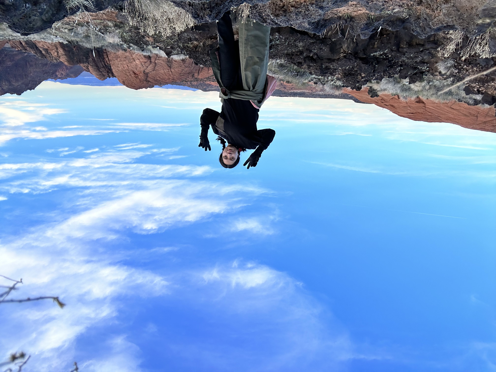
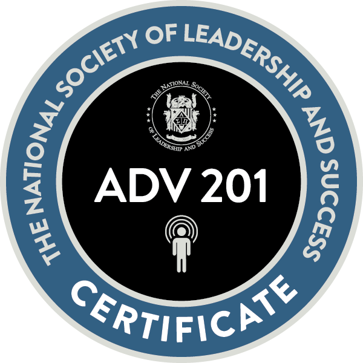

About Me!
 Energetic CEC Receptionist offering 5 years of effectively communicating and interacting with all types of people. Skilled at resolving issues quickly. I am a person. with integrity for the job. Good verbal and written communication, project planning and organizational skills. That lead me in my current job, I was appointed team leader for an internal transition time. This shows that I can overcome under duress, collaborate and carry out events and projects. In communicating, with the team to assist with additional needs. Allow customers a guarantee their event without problems, during the internal transition time. Forward-thinking as a team member with solid computer technical, capable of evaluating and conducting risks and test and troubleshooting issue. I have worked various projects as a translator with different. application. As you can see, I have even made my website, both in Spanish and in English.
If you want to hire me for personal training or teaching lessons, You can book me!
Education
Weber State University
AA in Spanish
| The National Society of Leadership and Success | Wildcat Advantage | Apex Certification |
|---|---|---|
| Induction | Level 1 | Core |
| Advanced Certification | Level 2 | Career |
| Executive Certification | Level 3 | Outreach |
| Education |
| Spanish Classes | Translation Classes | User Experience and Design Classes |
|---|---|---|
| Latin Superhero’s in Media | Business Language Translation | Front-End |
| Sustainability in Media | Audiovisual Translation | Introduction to Computer Science |
| Immigration in Film | Medical Translation | Programming |
| Cultural Heritage of Spain | Translation |
Experience
Bilingual Receptionist,
Nov. 2021—Present
Weber State Community Education Center | Ogden, UT
- Bilingual in Spanish and English.
- Achieved 95% customer satisfaction score based on feedback forms.
- Successfully handled 50+ phone calls daily with no complaints during the last 2 years.
- Greeting/assisting customers with information and registration for programs at the WSU CEC
- Consulted events in the office scheduling system.
YMCA Site Coordinator,
Aug. 2020–May 2021
YMCA | Ogden, UT
- Managed all activities, including Lessons and Field Trips for the After School Program with over 3 Team Members.
Key Accomplishments:
- Created a highly effective new YMCA, Taylor Canyon, that significantly impacted efficiency and improved operations by 95%.
- Promoted from YMCA Specialist to YMCA Site Coordinator, in less than 12-months
- Recognized as Employee of the 9 months for outstanding performance and team contributions.
- Created highly effective new clubs that significantly impacted efficiency and improved operation
What it meant to work at the YMCA!
Volunteer Service
Volunteer Translator & Interpreter
January. 2023–Present
The Advocates for Human Rights
- Help translate immigration documents from Spanish to English
- Help interpret for immigration clients from Spanish to English
For more information to become a translator or interpreter for The Advocates for Human Rights!
Volunteer Ted Talk Translator
Mar. 2022 to Present
Ted Talks
- Help translate TED Talk Videos from Spanish to English
For more information to become a become a translator for TED!
Volunteer Preschool Assistant
Mar. 2017 to Mar. 2020
Wee Lads and Lassies Preschool | Ogden, UT
- Be a team player and create a motivated, friendly work environment with other employees.
- Coordinated and arranged decorations, equipment, and food service to facilitate various entertaining activities.
- Monitored students to observe behavior, enforce rules and maintain safety.